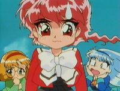
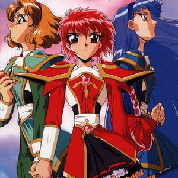
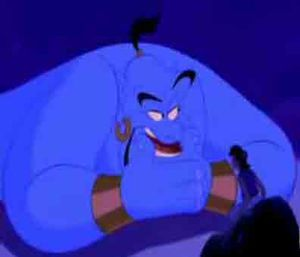
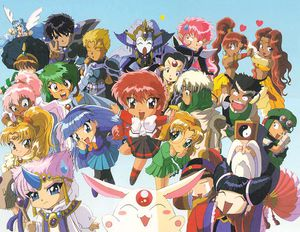
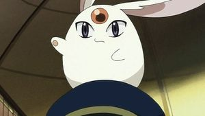

Magic Knight Rayearth
 De: La Frikipedia, la enciclopedia extremadamente seria.
De: La Frikipedia, la enciclopedia extremadamente seria.
| De la serie anime para todos:
|
| Magic Knight Rayearth
|
| 
|
| Lucy: ¿Quien carajo escribio este articulo?
|
|
| Género:
|
Maho shojo combinado con yaoi y yuri
|
| Episodios:
|
48
|
| Autor del manga:
|
CLAMP
|
| Publicación:
|
1993-1994
|
| Publicado en:
|
Nakayoshi
|
| Director del anime:
|
Mokona Mokoki
|
| Transmitido en:
|
Todos los paises que quieran a las CLAMP
|
| Ovas:
|
2
|
| Películas:
|
jajaja
|
| Notas
|
Es Cefiro no Sephiroth
|
«Ojala Nikona nunca hable»
~ Yo de niño cuando veia a las guerreras mágicas
«De acuerdo a la leyenda tres chicas cambiaran nuestro destino ¡Las Guerreras Mágicas!...»
~ Opening|Comienzo del opening latino de las guerreras mágicas
«¡Es un arma de destruccion masiva!»
~ George Bush a confundir a Zagato con Zapato
Magic Knight Rayhearth: tambien conocidas como Las Guerreras Mágicas es uno de los intentos por conquistar el mundo de la malvada organización CLAMP. Trata acerca de tres niñas que viajan a otro mundo semi-emo para salvarlo de su propia emosexualidad convirtiendose en las legendarias guerreras mágicas.
Historia
 Lucy: ¿Alguien sabe porque volteamos hacia arriba?
 Un genio al ser despertado
Primera temporada
Tres niñas Lucy, Marina y Anais (Hikaru, Umi y Fuu) que ni siquiera se conocen participan en una orgía lesbica entre escuelas femeninas en la torre de Tokio (cuartel general de las CLAMP) cuando de pronto son invocadas a un mundo desconocido y se encuentran cayendo y caen sobre un digimon el cual as lleva con un enano medio metrosexual de nombre Guru Clef este cuate les dice que son las legendarias Guarras Guerreras Mágicas que fueron convocadas por la inutil princesa Esmeralda la pila doble AA el pilar de Cefiro, la cual se encuentra cautiva por Zapato Zagato un emo que quiere acabar con el mundo (o sea lo normal). Las tres loquitas estas inician su viaje para conseguir sus armas mágicas de fayuca y despertar a unos pokémones que reciben aqui el nombre de genios aunque los muy cabrones no te cumplen ningún deseo.
De ahi en adelante suceden un montón de mamadas hasta que llega la hora de pelear contra Zapato quien igual que en Queretaro se lo agarraron entre las tres a chingadazos y se acabo la faena. Sin embargo se enteran de que no era malo solo que como cualquier emo estaba enojado con el mundo solo porque no se habia podido follar a la princesa Esmeralda por el simple hecho de ser el pilar de Cefiro. Al verlo muerto y como estaba en sus dias la princesa se enojo tanto que digievoluciona en Sephirot dispuesta a matar a las guerreras mágicas sin embargo estas tuvieron que matarla para que se le acabara lo lujuriosa y mandarla al infierno para encontrar a Zapato y follar felices por siempre.
Segunda temporada
Estas niñas estan tan deprimidas por haber hecho lo que hicieron en Cefiro que por poco agarran la moda emo cuando de pronto son llamadas de nuevo a este mundo y se encuentran de nuevo con el metro Clef quien les dice que este mundo esta muy jodido sin las baterias de la pila AA el pilar de Cefiro y que ahora todos sus habitantes se estan volviendo emos. Para acabarla de joder aprovechando que Cefiro esta hecho una mierda otros planetas quieren adueñarse de el convirtiendose en los nuevos pilares, estos son los planetas Carrosam (autozam), Chizeta, Fahren, Estados Unidos e Irak.
El punto es que hay que encontrar un nuevo pilar ya que el señor dios todopoderoso creador y dueño de todas las cosas lo demanda porque el esta muy ocupado para hacerse cargo de la mierda de mundo que creo. No solo esta el problema de los planetas invasores sino que para joderla más hay otra amenaza para Cefiro Deboinar, la union de toda la emo-sexualidad en Cefiro y su hija adoptiva Luz el lado emo que Lucy dejo en este mundo tras matar a la princesa (cabe destacar que es lesbiana )
En fin los buenos, ganan los malos pierden y Lucy se convierte en el nuevo pilar de Cefiro quien decidio mandar a la chingada todo esto del pilar y que los habitantes se dejaran de mamadas y se hicieron cargo de su propio mundo cosa que no le parecio a Mokona quien resulto ser el señor dios todopoderoso creador y dueño de todas las cosas y etc etc y se enojo tanto que decido mudarse con la piruja bruja de las dimensiones pero eso es otra historia...
Personajes
 Los habitantes de Cefiro más drogados que nunca
Las tres principales
- Hikaru Shidou (Lucy): es la
gilipollas protagonista de la serie. Esta niña con Síndrome de Edward Elric esta medio loca y de hecho su trenza esta más grande que ella. Es la primera en querer ser una guerrera mágica. Esta niña animosa en la segunda temporada por poco agarra la onda emo y por eso creo a Luz. Conoce al hermano metrosexual de Zapato, Latis con quien no se llevaba bien al principio pero como esto es un anime obvio despues se pondría cachonda con este. Al final se convierte en el pilar de Cefiro y decide que ya no exista esta mierda de pilar y se regresa a su mundo.(solo para que la convirtieran en una muñeca mitad pokémon y tener que andar por ahi con una niña más enana que ella pero esa es otra historia)
Esta Marina es de pokémon pero es igual de
fresa y
pija - Umi Ryuuzaki (Marina): esta niña con apellido de sobrenombre de detective es la clasica niña fresa o pija que nunca ha de faltar (pero no por eso deja de estar buena). Dicho por esta dscripción ya se imaginara que sera de esta niña
- Fuu Hodouji (Anaís): la cuatro ojos que nunca ha de faltar para satisfacer a los fetichistas es la unica con medio cerebro aqui (OJO dije medio). Tiene un romance con un gilipollas llamado Paris o Ferio pero nunca follaron (o tal vez si pero no pudimos verlo)
Los genios
- Rayearth (Lexus o Crimsom): es la forma evolucionada de Flareon, primo de la zorra de nueve colas de Naruto nadie sabe si es un lobo o un león y es el genio de Lucy.
- Ceres: es la forma evolucionada de Dragonite, un pokemon de agua con alas y es el genio de Marina
- Windam: es la forma evolucionada de Ho-Oh y el genio de Anais.
Los buenos (para nada)
 Una herejia contra
Monesvol y su maginifica fideeza. ¡HEREJE!)
- Mokona Modoki (Nikona): pokémon blanco de sexo dudoso, afortunadamente aqui no habla (y que bueno porque en Tsubasa Reservoir Chronicle no hay quien lo aguante). Esta criatura sirve como
estorbo acompañante de las guerreras mágicas durante su viaje (aunque no es de mucha ayuda) Despues descubrimos que el es el señor dios todopoderoso creador y dueño de todas las cosas.
- Princesa Esmeralda: niña inutil y sacrificada al puro estilo de Saori Kido. Es el pilar de Cefiro y la responsable de que este mundo no se joda. A pesar de eso queria folar con Zagato pero no se podia y cuando estas tres niñas lo mataron digievoluciono en Sephirot solo para dejarse matar por ellas.
- Guru Clef: puto enano metrosexual con Síndrome de Edward Elric quien es el encargado de decirle a la guerreras mágicas que deben ayudar este mundo y tan tan se acabo su participación en la serie.
- Presea: esta chava que esta buena es la fayuquera de armas de Cefiro (al parecer la unica) es quien les vende las armas de fayuca para defenderse durante su viaje en busca del mineral del culo para que les creara sus armas definitivas que les ayudaria a liberar a los genios.
- Ferio (Paris): niño gilipollas que vive en el bosque haciendo desmadre. Es el hermano perdido de la princesa Esmeralda (musica de telenovela) quien perdio la memoria despues de meterse unas chelas y amanecer en bosque crudo acostado con un oso, siempre se quiso follar a Anais
Los ¿malos?
Zapato Zagato: el malo malisimo de la primera serie (musica dramatica). Es emo esto queda descubierto por su ropa negra, fleco hasta los ojos y su tragica historia (nehhh). El tipo se queria follar a Esmeralda pero esta no podia por ser el pilar asi que la capturo para que el mundo se echara a perder con tal de que este y su amada follaran felices por siempre, pero todo hubiera salido perfecto de no ser por tres niñas entrometidas.
- Alcyone (Alanis): es la puta más grande de Cefiro, alumna de Guru Clef (en magia o prostitición?) se queria follar a Zagato pero no le correspondio.
- Caldina: bailarina de table dance quien solo le importaba el dinero pero como es clasico de anime las niñas estas la convencen de que no todo en la vida es dinero asi que vuelve a ser buena y abrir un club nocturno en donde balaria en el tubo gratis.
- Ascot: niño enano más que Lucy (si eso es posible) cualquier parecido con Shippo de Inuyasha es mera coincidencia. Es un entrenador pokémon que tiene a todos sus pokemones viviendo con el (maldito zoofilo). Despues de ser derrotado el niño se mete unas cuantas drogas para de pronto crecer de la nada y poder follarse a Marina (lo consiguio? quien sabe)
- Lafarga (Ráfaga): personaje interpretado por Arnold Schwarzenegger, era el espadachín más fuerte de Cefiro (ese es el más fuerte? como sera los debiles) un dia vio como Zagato se llevaba ala princesa pero inmediato se lo madreo y le lavo el coco. Con un simple madrazo vuelve a la normalidad.
- Innouva (Nova): homosexual salido del señor de los anillos fue una bestia regalo de la princesa a Zagato pero como a este no le daba la zoofilia lo convirtio ern un maldito afeminado lame culos Es como el Smithers de Zagato.
Los de la segunda temporada
- Latis: es el hermano metro (y bi) sexual de Zagato. Despues de que este salierera con su chsitecito de la princesa, Latis decido largarse a otros planetas la mayor parte del tiempo se la paso en Autozam donde se volvio una loca sin embargo Lucy lo salvo de la joteria enamorandose de ella.
- Primera (Primavera): hada más desesperante que la de Link persigue a Latis a donde fuera
- Eagle Vision (Águila): es una loca que proviene del planeta Autozam , ex-novio de Latis que desea convertirse el pilar porque en su planeta les cortaron la luz por no pagarla
- *Aska: princesa de Fahner que desea convertirse en el pilar para ser más bonita (sindrome de la edad del pavo)
- Tatra y Tarta: un par de hermanas gemelas que estan buenas, son musulmanes que desean convertirse en el pilar de Cefiro para echar de su pais a los ejercitos de Estados Unidos y de paso darle otro zapatazo a Bush.
- Nova (Luz): nada que ver con el personaje que mencionamos alla arriba. Es el lado emo que salio de Lucy por matar a la princesa. Esta pelirrosada lesbiana debe ser pariente de Gaara ya que que desea matar a todos los que Lucy ame. Sin embargo Luz es tragada por Lucy otra vez para ser uno misma.
- Debonair: la mala malisima de todo este cuento (musica dramtica), union de toda la emosexualidad de Cefiro pero obvio se la cargan.
Enlaces externos
Autor(es):
- Fordus
- Frikiman
- Naruto hyuga
- KaZe YaShA
- Dark temptation
- SakuraMiya
- Goofy.
- Ranko Inazuma
- Kuchutuflaki
Frikipedia 2005-2016, Licencia
GFDL 1.2 - Extraído por FrikiLeaks